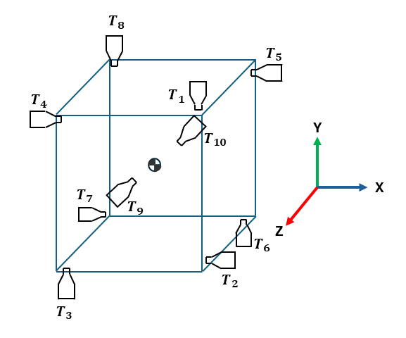
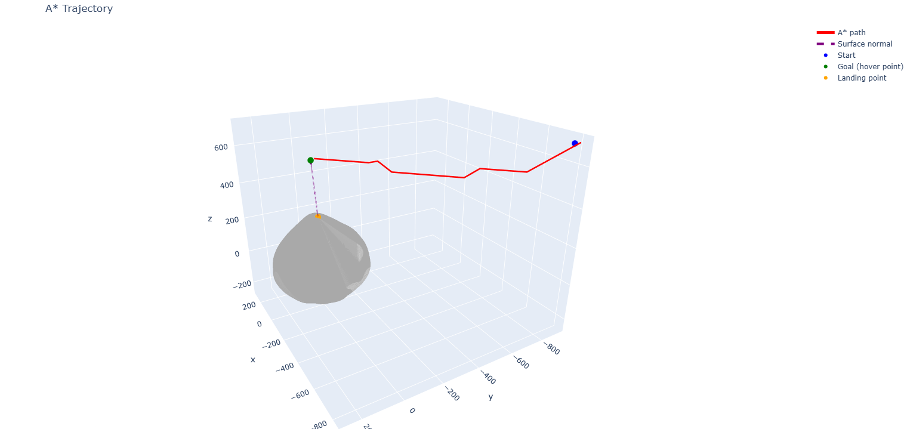
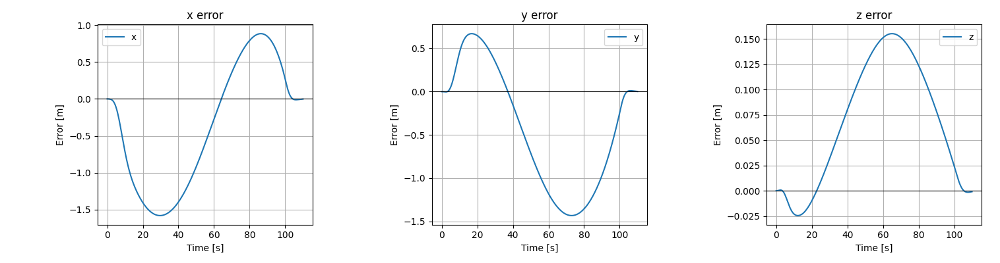
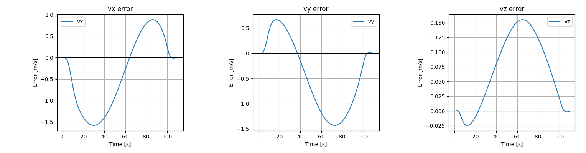
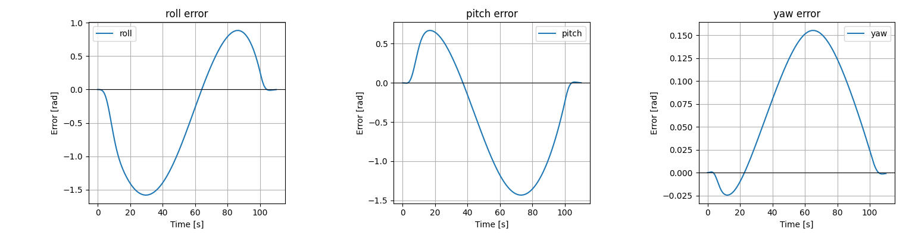
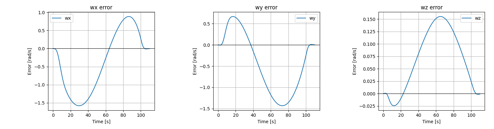
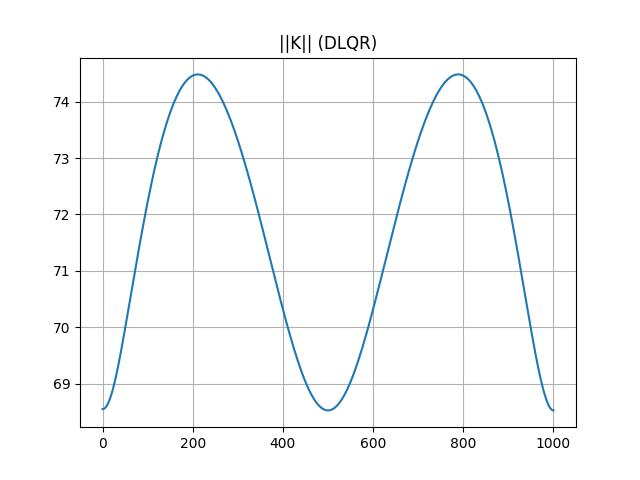

Autonomous 6-DOF guidance to a hover point above Bennu
A self-contained pipeline for autonomous landing on asteroid 101955 Bennu. Starting from the asteroid’s shape and gravity models, it selects a suitable landing site, plans a safe approach through the local gravity field, and guides a thruster-actuated spacecraft to a stable hover point above the surface using closed-loop control with a time-varying LQR regulator based on the full nonlinear rigid-body dynamics.
Overview
This project plans and flies a trajectory for a small thruster-actuated spacecraft operating near asteroid Bennu, using only a precomputed polyhedral shape model and its spherical-harmonic gravity field. Given those two inputs, the pipeline:
- scores candidate landing sites on slope, local gravity shear, gravity variability, gravity magnitude and surface roughness;
- plans a path through 3-D space with A*, weighted by local gravity and biased toward a clean final approach vector;
- prunes and smooths that path into a flyable, minimum-jerk trajectory in position, velocity and acceleration;
- derives the full nonlinear 6-DOF equations of motion symbolically and linearizes them along the trajectory; and
- tracks the trajectory with a time-varying LQR gain schedule, verified in closed-loop simulation.
Spacecraft model
The vehicle is modeled as a rigid body with a diagonal inertia tensor and ten fixed thrusters arranged around a square frame. Mass, inertia and geometry are parameters to the whole pipeline, not hardcoded constants, so the same code can be re-run for a different vehicle.
Coordinate systems & dynamics
The state is a 12-vector of position and Euler attitude, plus their rates. The equations of motion are derived symbolically with SymPy via the Euler–Lagrange method — not hand-linearized — so the same derivation produces both the nonlinear model used for simulation and the exact Jacobians used for control.
The rotation from body to world, S = Rx·Ry·Rz, also rotates the inertia tensor into the
world frame, and the angular-velocity Jacobian is built by extracting the axial (vee) vector from each
∂S/∂qᵢ · Sᵀ. g(q) is the local gravity vector, trilinearly interpolated at
runtime from the precomputed Bennu gravity grid described in 05.
Mass matrix M(q), Coriolis/centrifugal terms, and the thrust-and-gravity Jacobians
A(t) = ∂ẋ/∂x and B(t) = ∂ẋ/∂u are all lambdified from the symbolic model and
evaluated numerically along the nominal trajectory, producing a time-varying
linear model rather than a single linearization point.
Thruster configuration
Ten fixed thrusters (T1–T10) map into body-frame force and torque through the frame geometry.
Eight lateral thrusters produce in-plane force and yaw/pitch/roll torque in antagonistic pairs;
two axial thrusters (T9, T10) produce the differential vertical force. Torque scales with the
half arm length, a/2 = 0.3 m.
Nominal thrust for a given trajectory point is solved as a least-norm allocation problem —
a Tikhonov-regularized pseudo-inverse of the 6×10 thrust map (λ = 1e-4) — rather
than an optimizer, which is fast enough to run at every trajectory sample but doesn't yet enforce
per-thruster saturation.

Trajectory generation
Everything upstream of control runs offline, over Bennu's known shape and gravity field, to produce a single flyable path from a start position to a hover point above the selected landing site.
| step | what it does |
|---|---|
| shape_obj.py | Synthesizes Bennu's surface from spherical-harmonic shape coefficients and exports it as an OBJ mesh. |
| Bennu_gravity_model.py | Computes the gravity field from potential coefficients (degree/order up to 450 near-surface, 30 globally), using a Numba-accelerated associated-Legendre recursion. |
| gravity_Intrep.py | Trilinearly interpolates the precomputed gravity grid at arbitrary query points — this is what the planner and controller actually call. |
| occupany_grid.py | Ray-casts against the mesh (Embree-accelerated when available) to voxelize solid space, then dilates it for clearance margin. |
| landing_map.py | Scores every mesh face on slope, tangential gravity, local gravity variability, gravity magnitude and roughness, and picks the minimum-cost site. |
| a_star_map.py | 26-connected 3-D A* over the occupancy grid; cost blends terrain/gravity cost with a penalty that increasingly rewards heading toward the final approach vector near the site. |
Trajectory smoothing
A* returns a grid-aligned, geometrically jagged path — not something a controller should try to track directly. Two passes turn it into a flight-ready reference:
- Pruning (
path_pruning.py) — greedily removes waypoints whenever a straight line between two non-adjacent points stays collision-free, tested with sampled line-of-sight checks against the occupancy grid. - B-spline fit (
path_generation.py) — fits a spline through the pruned waypoints, pinning the endpoints to the actual start position and the offset hover point. - Time parameterization (
Trajectory_gen.py) — reparameterizes by arc length, then applies a quintic (minimum-jerk) time law,10τ³ − 15τ⁴ + 6τ⁵, over a fixed horizon to get position, velocity and acceleration histories with zero endpoint jerk. - Attitude profile (
nominal_euler_angles_val.py) — points yaw/pitch along the velocity direction, blended smoothly from the vehicle's actual starting orientation using a Gaussian blend window near t = 0.
TV-LQR controller
The smoothed trajectory is only a reference — it isn't dynamically consistent with the full nonlinear model, so nominal thrusts and a feedback controller are computed around it.
- Nominal control (
nominal_ctrl_input.py) — inverts the Euler–Lagrange model at each trajectory sample to find the thrusts consistent with the planned acceleration, then maps them to individual thrusters through the least-norm allocator. - Linearization (
linearizer.py) — evaluates the symbolicA(t),B(t)Jacobians at every sample along the nominal trajectory. - Controllability check (
controllability.py,smooth_ctrl.py) — the controllability matrix's rank and condition number are checked at every sample; ill-conditioned points are patched with their nearest well-conditioned neighbor before gain design. - Gain scheduling (
lqr.py) — each continuous(A, B)pair is discretized with the matrix-exponential (Van Loan) method, then a discrete-time LQR gainK(t)is solved per step withpython-control.
Closed-loop tracking is verified with an RK4 integration of the full linear system
(control_sys.py), with the nominal trajectory extended by a fixed hold so the controller's
hover-stability can be checked after arrival, not just its trajectory-tracking behavior.
Simulation results
Planned path, then closed-loop tracking error across all twelve states during the RK4 simulation
(control_sys.py), plus the DLQR gain-schedule norm along the trajectory (lqr.py).






Limitations & current status
The pipeline runs end-to-end today, but it stops above the surface — it is not a landing controller yet.
- ✕No descent-to-surface or touchdown phase — the controller is only verified for approach-and-hover, ~300 m off the surface.
- ✕No contact, impact or landing-gear/anchoring model.
- ✕Thrust allocation is an unconstrained least-norm solve — no saturation, on/off, or thruster-failure constraints.
- ✕Shape and gravity models are static and precomputed offline — no online mapping, SLAM, or in-flight model update.
- ✕Approach geometry (300 m standoff, 70° tilt, 90° yaw off the surface normal) is fixed, not chosen or optimized per site.
- ✓Path planning, trajectory smoothing, full nonlinear 6-DOF dynamics, linearization and TV-LQR tracking are implemented and verified in closed-loop simulation.
Future work
- Descent and touchdown guidance from the hover point, with soft-landing velocity and attitude constraints.
- Contact dynamics and a landing-gear or anchoring model for surface interaction on a low-gravity body.
- Constrained thrust allocation (e.g. QP-based) that respects per-thruster saturation and degraded/failed thrusters.
- Online hazard detection and local replanning during descent, rather than a fully precomputed path.
- Monte Carlo dispersion analysis to quantify robustness margins of the TV-LQR gains.
- Validation against a higher-fidelity simulator and, ideally, real OSIRIS-REx-derived shape/gravity data.
References
Data and methods this project builds on. Swap in the exact sources for the shape/gravity coefficient files if they differ.
- Barnouin, O. S., et al. "Shape of (101955) Bennu indicative of a rubble pile with internal stiffness." Nature Geoscience 12, 247–252 (2019).
- Scheeres, D. J., et al. "The dynamic geophysical environment of (101955) Bennu based on OSIRIS-REx measurements." Nature Astronomy 3, 352–361 (2019).
- Lauretta, D. S., et al. "OSIRIS-REx: Sample Return from Asteroid (101955) Bennu." Space Science Reviews 212, 925–984 (2017).
- Hart, P. E., Nilsson, N. J., & Raphael, B. "A Formal Basis for the Heuristic Determination of Minimum Cost Paths." IEEE Transactions on Systems Science and Cybernetics 4(2), 100–107 (1968). — A* search.
- Anderson, B. D. O., & Moore, J. B. Optimal Control: Linear Quadratic Methods. Prentice-Hall (1990). — discrete-time LQR and gain scheduling.
- Van Loan, C. "Computing Integrals Involving the Matrix Exponential." IEEE Transactions on Automatic Control 23(3), 395–404 (1978). — continuous-to-discrete matrix-exponential discretization.
- Werling, M., et al. "Optimal trajectory generation for dynamic street scenarios in a Frenet frame." ICRA (2010). — quintic, minimum-jerk time parameterization.
- Dunn, W., et al. trimesh — Python library for loading and processing triangular meshes.
- Fuller, D. N., Millman, K. J., & python-control developers. python-control — Python Control Systems Library.
- Meurer, A., et al. "SymPy: symbolic computing in Python." PeerJ Computer Science 3:e103 (2017).
- Lam, S. K., Pitrou, A., & Seibert, S. "Numba: A LLVM-based Python JIT compiler." Proceedings of the Second Workshop on the LLVM Compiler Infrastructure in HPC (2015).